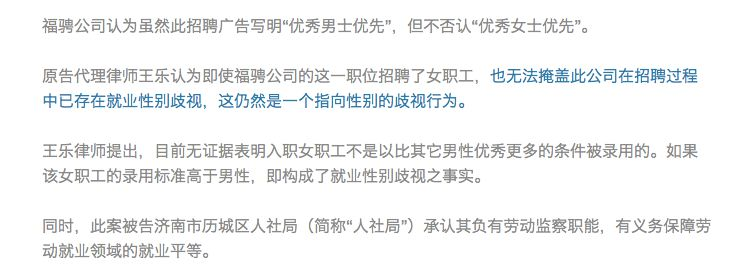

山东就业性歧第一案终审裁定结果
2018年3月20日，山东就业性别歧视第一案当事人夏南收到来自山东省济南市中级人民法院于2月24日签署的终审裁定书。裁定结果为：驳回上诉，维持原裁定。

2016.12月
夏南（化名）通过中华英才网发现，山东福骋汽车贸易有限公司（以下简称“福骋公司”）发布的财务经理一职的任职要求，第一条就是“年龄30-35岁，形象好，气质佳，优秀男士优先”。夏南认为该职位并不是国家规定的不适合妇女的岗位，而¨男士优先¨即同等条件下录用男性不录用女性，女性的录用标准被提高，这属于就业中的性别歧视行为。于是夏南向福骋公司所在地的直接监管部门济南市历城区人力资源和社会保障局（以下简称“历城区人社局”）寄出了举报信，要求责令福骋公司改正歧视行为，并对其进行处罚。
2016.12.19
历城区人社局作出书面答复，回复中称：“用人单位招聘信息中有'优秀男士优先'的任职要求一事属实，但用人单位招聘存在性别歧视一事缺乏事实和法律依据”。
2017.6月
即将毕业正着眼于未来规划的夏南越发感受到就业性别歧视对女性成长与发展所产生的巨大阻碍。为了警示相关部门行使监管职责，也为了使更多人关注到这个极为普遍的不平等问题，夏南于6月16日在济南市历城区人民法院对历城区人社局提起诉讼，当场立案。
以上截图均取自此账号2017.6.17推送《山东省就业性别歧视第一案昨日立案》
2017.8.17
一审开庭，过程跌宕起伏，庭审无实质进展：审判长不断打断原告律师的发言，并不允许书记员入室记录庭审笔录，还当庭质问原告律师：“你的律师资格是怎么考上的？”
2017.9.1
二审开庭，被告人历城区人社局承认其负有劳动监察职能，有义务保障劳动就业领域的就业平等。另外，案件第三人福骋公司出庭并提交了新的证据。证据称，被举报的财务经理一职已于2017年4月招聘了一位女职工，并以此否认就业性别歧视事实。

截图自此账号2017.9.20推送《¨男士优先¨职位招聘了女职工，这还是就业歧视吗？》
2017.11.17
济南市历城区人民法院签署《行政裁定书》，裁定：原告不具有提起本案行政诉讼的原告主体资格，驳回原告起诉。
 截图自此账号2018.1.3推送《年后回锅肉：翻炒山东就业性别歧视第一案》
截图自此账号2018.1.3推送《年后回锅肉：翻炒山东就业性别歧视第一案》
2017.12.1
因不服诉讼裁定结果，夏南将上诉状邮寄至济南市中级人民法院，要求二审法院依法改判、撤销、变更或发回重审。
2018.2.24
济南市中级人民法院签署终审《行政裁定书》，裁定：驳回上诉，维持原裁定（原判裁定是：原告不具有提起本案行政诉讼的原告主体资格）
至此，
此案的诉讼及上诉流程均已走完，
但公正的结果尚未得到。
而当小编阅读这份终审裁定书时发现，其中的经由分析存在诸多论理不足与概念混淆，而且论述中丝毫没有理会原告的诉理与分析，却受二审裁决书影响成分极大，这不免使人质疑法院公信力。
既然原告资格都被终审否定了，
那些一直都没和法院说清的理，
就拿到这儿来说吧。
夏南究竟有没有原告资格？
法庭说没有
是因为
她没有在福骋公司应聘！
也不是该单位的员工！
所以与该公司的就业性别歧视行为没有直接利害关系！
律师说有！
是因为
1.修改后的行政诉讼法不再区分行政行为之抽象或具体，原告认为有利害关系即可。
2.是否前去应聘，只意味着她是否与福骋公司有民事上的利害关系，并不影响她与历城区人社局的行政关系。
人社局行政不作为是否成立？
法庭说不成立
历城区人社局的行政流程合法的！
立案－调查－做询问笔录－回复处理结果并将被举报公司的书面答复送达上诉人。
行政行为至此完成。
律师说成立
人社局的回复内容是：性别要求属实，但就业性别歧视缺乏依据。
试问，这样的回复称得上有效吗？
监管部门若是如此搪塞，那么监管效力要如何保证呢？
而当夏南被问到是否有意愿进一步向检察院进行申诉的时候，她再次表示，案子的初衷是提醒监管部门对就业性别歧视的监管职责，还有就是让更多人意识到就业性别歧视的违法性，因此是否继续法律流程主要取决于这个案子在多大程度上可以被讨论。并且她表示，尽管申诉流程将是更加漫长无期并且耗费精力的，但如果继续坚持能够有助于推动人们对就业性别歧视的认知，那她将是不惜投入时间的。
此处附上夏南的打赏二维码。
欢迎大家用钱来支持她！
也欢迎在推送下方留言，
让夏南感受到关注或支持！